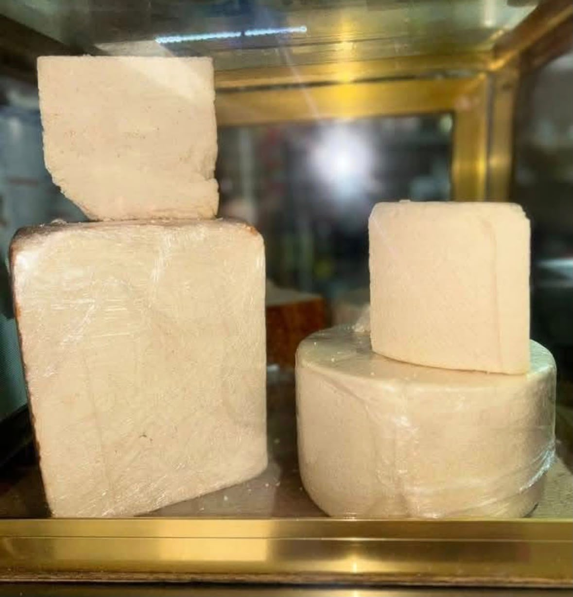
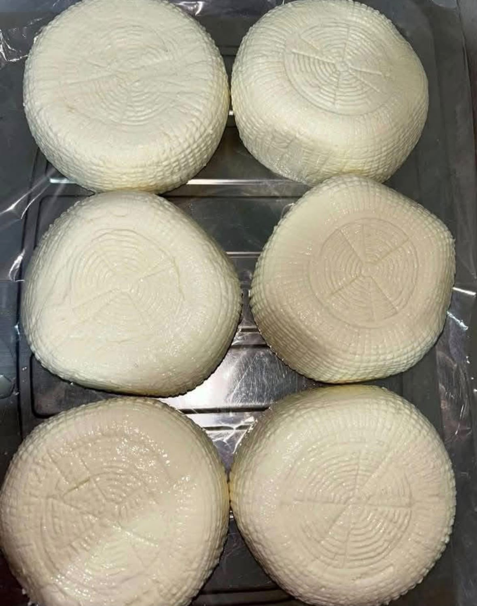
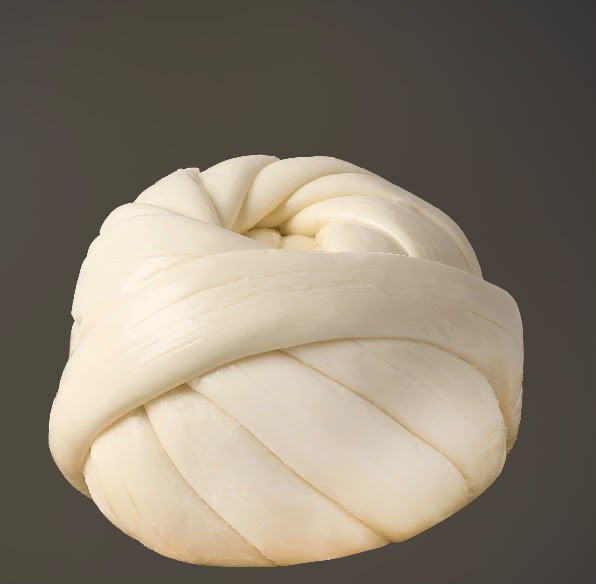
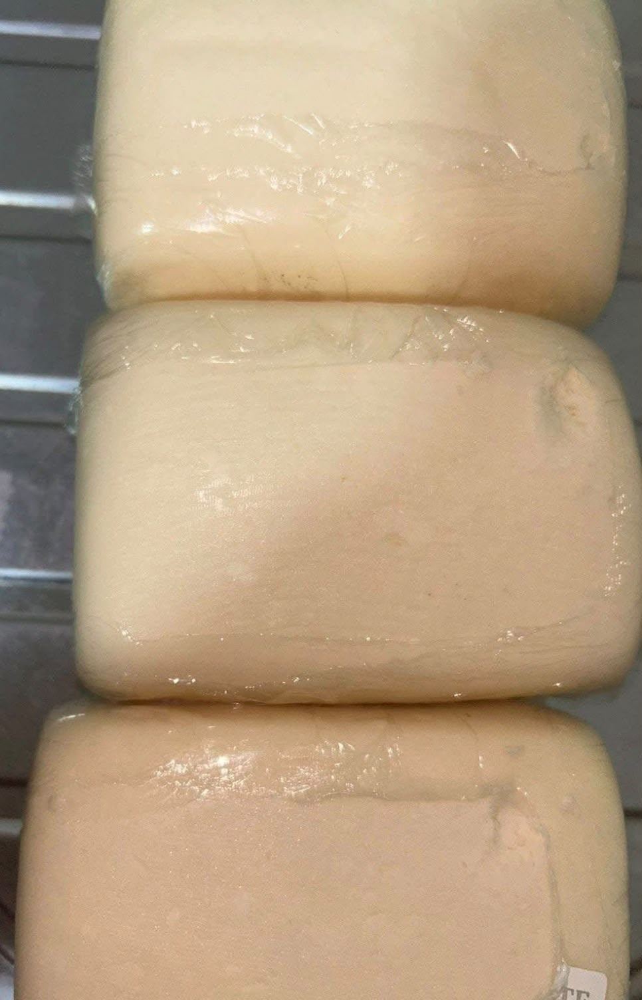
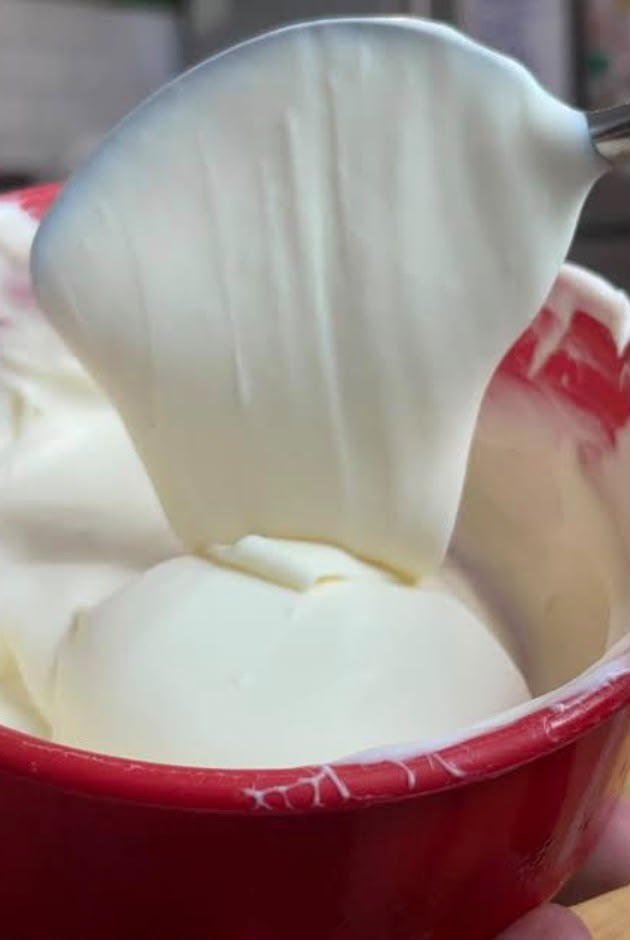
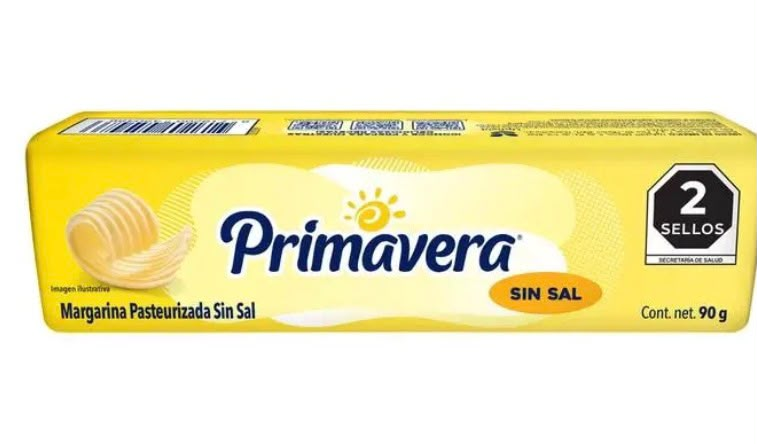

Quesos
Disfruta de nuestra variedad de quesos y productos lácteos para acompañar tus comidas.
Quesos y productos lácteos
Disfruta de nuestra variedad de quesos y productos lácteos para acompañar tus comidas.





